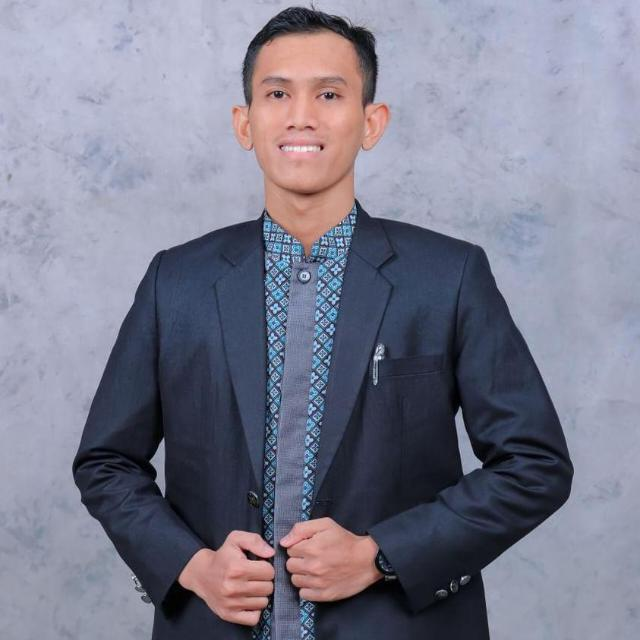
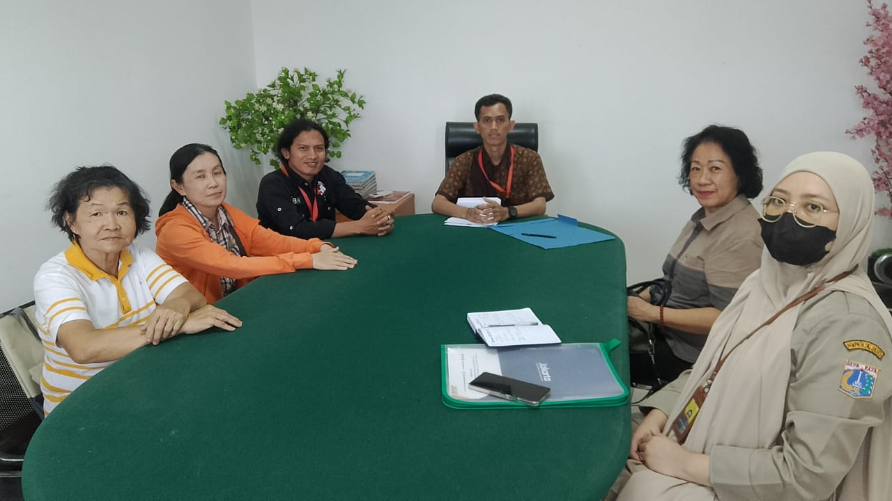

Praktisi Hukum dengan dedikasi tinggi pada etika profesi, penyelesaian sengketa, dan pelayanan bantuan hukum. Teruji dalam penanganan perkara litigasi dan non-litigasi.

Saya adalah Sarjana Hukum dari Universitas Islam Makassar dengan pengalaman profesional di bidang advokasi, administrasi hukum, dan kepemimpinan organisasi. Sejak masa perkuliahan hingga saat ini, saya aktif terlibat dalam kegiatan bantuan hukum dan organisasi profesi di tingkat lokal maupun nasional.
Saya telah lulus Ujian Profesi Advokat (UPA) PERADI pada periode pertama tahun 2026. Saya terbiasa bekerja secara sistematis, menjunjung tinggi etika profesi, serta memiliki kemampuan bekerja secara mandiri maupun dalam tim.
Fokus praktik hukum saya meliputi pendampingan klien, penelitian hukum (legal research), penyusunan dokumen (legal drafting), serta mediasi sengketa.
S1 Ilmu Hukum (IPK 3.84)
Universitas Islam Makassar
PKPA DPN PERADI (2024)
Lulus UPA PERADI (2026)
Litigasi & Non-Litigasi, Legal Drafting, Administrasi Perkara, Mediasi.
Bertugas di Pengadilan Negeri Jakarta Barat. Mengelola administrasi perkara, mendampingi proses mediasi, serta berkoordinasi dengan mediator, para pihak, dan aparatur pengadilan.
Terlibat dalam penanganan perkara litigasi dan non-litigasi. Menyusun dan menelaah dokumen hukum, membuat ringkasan perkara, melakukan riset peraturan, dan mendampingi konsultasi klien (Bantuan Hukum Cuma-Cuma).
Memimpin arah strategis kebijakan bantuan hukum kelembagaan mahasiswa di tingkat nasional, melakukan advokasi publik, dan edukasi hukum.

Peran: Asisten Advokat
Melakukan wawancara pencari keadilan, menyusun kronologi perkara, dan melakukan riset yurisprudensi terkait tindak pidana umum untuk bahan pembelaan (Pledoi) oleh Advokat senior.
Lihat Detail PerkaraPeran: Asisten Advokat
Melakukan wawancara pencari keadilan, menyusun kronologi perkara, dan melakukan riset yurisprudensi terkait tindak pidana umum untuk bahan pembelaan (Pledoi) oleh Advokat senior.
Lihat Detail PerkaraPeran: Asisten Advokat
Melakukan wawancara pencari keadilan, menyusun kronologi perkara, dan melakukan riset yurisprudensi terkait tindak pidana umum untuk bahan pembelaan (Pledoi) oleh Advokat senior.
Lihat Detail PerkaraPeran: Asisten Advokat
Melakukan wawancara pencari keadilan, menyusun kronologi perkara, dan melakukan riset yurisprudensi terkait tindak pidana umum untuk bahan pembelaan (Pledoi) oleh Advokat senior.
Lihat Detail Perkara*Catatan: Detail pihak yang berperkara dan nomor putusan dirahasiakan untuk mematuhi Kode Etik Advokat mengenai kerahasiaan klien.
Saya terbuka untuk peluang profesional, posisi Junior Lawyer, atau kolaborasi hukum lainnya. Silakan hubungi saya melalui saluran di bawah ini.
+62 812-4339-9917
abdulsahid1923@gmail.com
Palmerah, Jakarta Barat, DKI Jakarta